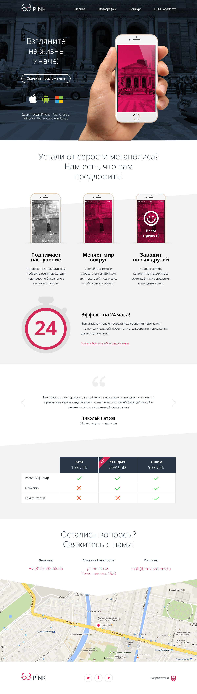

Обо мне
Здравствуйте! Меня зовут Юрковская Александра, проживаю в небольшом, но очень красивом городе - Пскове. Моё знакомство с миром верстки началось в 2016 году, тогда я решила сменить профессиональную деятельность и прошла курсы на сайте HTML Academy, После короткого самообучения основам верстки устроилась HTML-верстальщиком (первые 3 месяца занимала должность стажёра), далее мне захотелось систематизировать и дополнить свои знания, более глубоко изучить технологии, я записалась на два интенсива от HTML Academy (базовый и продвинутый HTML CSS), успешно их окончила и защитила личные проекты. В бдущем планирую развиваться в направлении web разработки.
Личные качества: трудолюбивая, ответственная‚ неконфликтная, коммуникабельная, есть большое желание учиться новому и повышать свой профессиональный уровень, мне всегда интересно решать сложные задачи и добиваться поставленных целей.
Контакты: телефон 89532453351 почта kurchavova.a@list.ru
Навыки
Хорошее знание HTML5 и CSS3; Работа с SVG графикой; Использование препроцессора (LESS); Верстка по psd макетам в соответствии с техническим заданием и slyleguide; Кадрирование контентных изображений; Ретинизация изображений; Верстка в Perfect Pixel; Написание простейшего Javascript (работа с DOM); Автоматизация с помощью Grunt; jQuery на уровне написания простых скриптов, работа с jQuery UI; Знание Adobe Photoshop в рамках своей специализации; Опыт работы с Git; Семантическая верстка; Методология БЭМ; Adaptive и Responsive верстка.
Опыт работы 1 год
HTML Academy
Апрель 2017 — июнь 2017
Верстальщик
- Верстка личных проектов (код проверялся в соответствии с профессиональными критериями качества).
Lightsoft
Июль 2016 — март 2017
HTML-верстальщик
- Верстка различных элементов контента - Внесение правок - Адаптивная верстка
Портфолио
Barbershop Borodinski

Sedona
https://sashamj.github.io/332613-sedona/ GitHub https://github.com/sashaMJ/332613-sedona
Pink
Pink адаптирован под мобильные, планшетные и десктонпные устройства.(резиновая верстка) https://sashamj.github.io/release-pink/ GitHub https://github.com/sashaMJ/332613-pink
